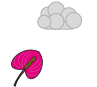
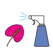
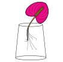

De anthurium komt uit Zuid Amerika, daar staat het lekker warm en vochtig buiten.
Wist je dat er wel 600 soorten zijn? Je hebt ze dan ook in verschillende kleuren.
Wat de anthurium zo bijzonder maakt is dat hij het hele jaar lang bloeit (een bloemetje heef).
Dit maakt het dan ook heel populair
Waar moet ie staan dan?
De anthurium komt uit de regenwouden van Latijns-Amerika. Hier is het heel erg warm en vochtig.
Dat vindt de anthurium dan ook fijn als hij in je woonkamer staat. Het is wel belangrijk dat
je plantje niet in direct zonlicht staat, daar kan die niet goed tegen en verkleuren de blaadjes.
(tip: de anthurium is perfect voor op het kantoor door de mooie bloem en weinig onderhoud)
Water geven

De antharium heeft niet verschrikkelijk veel water nodig. Het is het beste als ze in een
vochtige grond staan. Hierdoor heeft ze altijd toegang tot water maar verdrinkt je plantje ook niet.
Als je je plantje te veel water geeft krijgen de bladeren bruine vlekjes met een geel randje.
Geen paniek!, als je je plantje de komende dagen geen/minder water geeft dan komt het allemaal weer goed.
Zorg ervoor dat de grond steeds vochtig is maar dat er geen laagje water in je pot staat.
Sproeien?

Je hoeft de antharium in principe niet te sproeien voor een mooie plant. Maar omdat de antharium
uit het regenwoud komt is het wel een hoge luchtvochtigheid gewend. In de winter maakt je kachel
de lucht wat droger dus kan je met sproeien de kans op bloemen vergroten. Al met al: in de zomer niet,
in de winter wel
Verpotten
De antharium kan je na 2 jaar verpotten als de plant te groot is voor zijn oude pot. Doe dit in
de lente, dan is de plant het sterkste om enige beschadegingen aan de wortels te repareren. Als
je verpot doe de plant dan in een pot die tenminste 20% groter is dan de oude pot, hierdor heeft je
plantje weer genoeg ruimte om te groeien.
Te eten geven
Je antharium heeft de eerste 2 maanden geen extra voeding nodig, dit komt omdat je plantje
genoeg heeft aan de potgrond van de kweker. Na die 2 maanden heeft je plantje extra voedingsstoffen
nodig. Dit heeft ze alleen nodig in de zomer en lente, in de winter gaat de plant namelijk in een
soort winterslaap en gebruikt het ook minder energie. Om te weten hoeveel voedingsstoffen je moet geven
kan je het beste op het pakje kijken, geef nooit te veel!, dit kan schadelijk zijn voor je plantje.
In een vaas?

Het leuke aan een antharium is dat je hem met wortels en al in een vaas kan stoppen. Dit ziet
er leuk uit en is ook nog eens heel onderhoudsvriendelijk. Je doet het door voortzichtig je plantje
uit de pot te halen en zo veel mogelijk potgrond te verwijderen. Als je een groot deel hebt weggehaald
kan je je plantje onder de kraan houden om de laatste stukjes weg te krijgen. Maak vervolgens je vaas
schoon en vul met kraanwater, zorg dat alleen de wortels onder water staan!